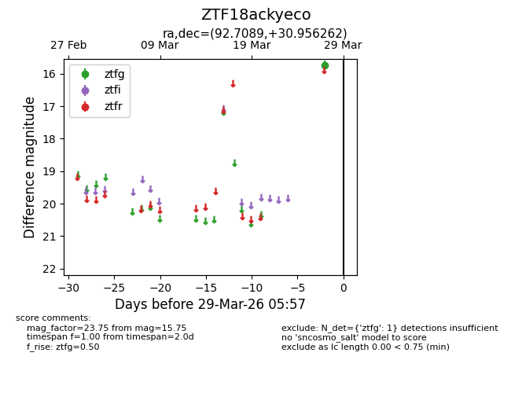
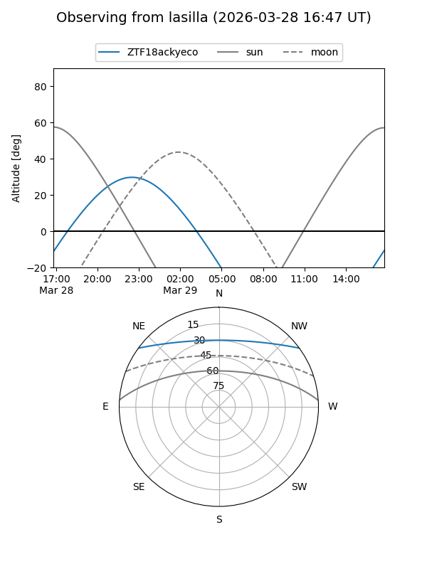
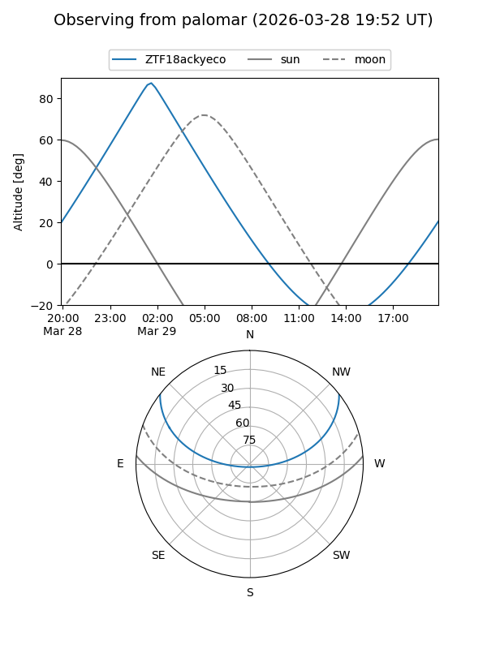

ZTF18ackyeco
Target ZTF18ackyeco at 2026-03-29 06:00
Aliases and brokers:
FINK: link
Lasair: link
ALeRCE: link
alt names
ZTF18ackyeco (ztf,fink_ztf)
Coordinates:
equatorial (ra, dec) = 92.7089,+30.95626
equatorial (HMS+DMS) = 06:10:50.15,+30:57:22.54
galactic (l, b) = (180.9694,+5.74175)
Flags:
Photometry:
last ztfg=15.75
1 ztfg detections
Lightcurve

Visibility


Additional plots